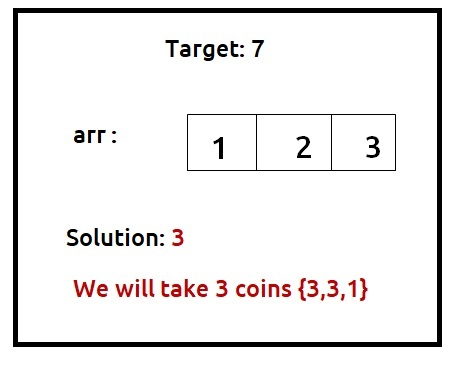
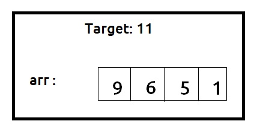
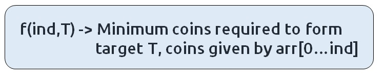
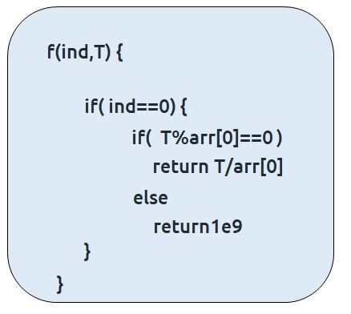
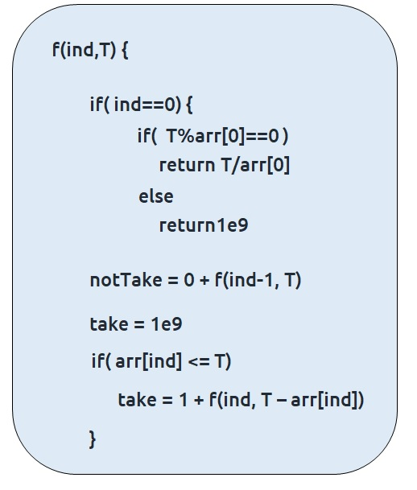
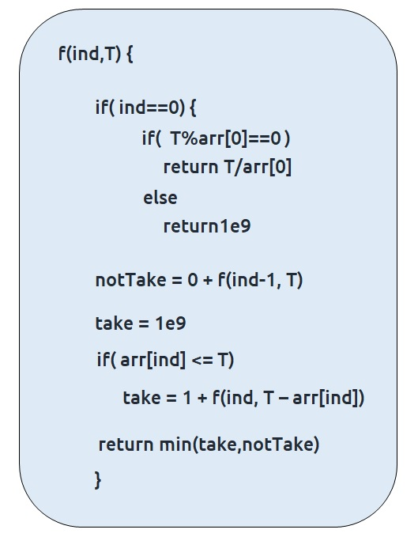

Problem Statement: Minimum Coins
Problem Link: Minimum Coins
We are given a target sum of ‘X’ and ‘N’ distinct numbers denoting the coin denominations. We need to tell the minimum number of coins required to reach the target sum. We can pick a coin denomination for any number of times we want.
Examples
Example: 

Disclaimer: Don’t jump directly to the solution, try it out yourself first.
Memorization Approach
Algorithm / Intuition
Why a Greedy Solution doesn’t work?
The first approach that comes to our mind is greedy. A greedy solution will fail in this problem because there is no ‘uniformity’ in data. While selecting a local better choice we may choose an item that will in the long term give less value.
Let us understand this with help of an example:

A Greedy solution will be to take the highest denomination coin first, so we will take an item on index 0, with a value of 9. Now the remaining target sum will be 2. Therefore we can only consider coins with a value of 1. We will take 2 coins of value 1 to meet the target. So a greedy solution gives us the answer 3 {9,1,1}.
Now we can clearly see that a non-greedy solution of taking 2 coins valued 6 and 5 will give us a better option. So we can say that the greedy solution doesn’t work for this problem.
As the greedy approach doesn’t work, we will try to generate all possible combinations using recursion and select the combination which gives us the minimum number of coins.
Steps to form the recursive solution:
We will first form the recursive solution by the three points mentioned in Dynamic Programming Introduction.
Step 1: Express the problem in terms of indexes.
We are given ‘n’ distinct numbers. Their denomination is represented by the ‘arr’ array. So clearly one parameter will be ‘ind’, i.e index up to which the array items are being considered.
There is one more parameter “T”. We need to know the given target that we want to achieve.
So, we can say that initially, we need to find f(n-1, T) where T is the initial target given to us. f(n-1, T) means we are finding the minimum number of coins required to form the target sum by considering coins from index 0 to n-1.

Base Cases:
If ind==0, it means we are at the first item, so in that case, the following cases can arise:
- arr[0] = 4 and T = 12
In such a case where the target is divisible by the coin element, we will return T%arr[0].
- arr[0] =4 and T=1 , arr[0]=3 T=10
In all other cases, we will not be able to form a solution, so we will return a big number like 1e9

Step 2: Try out all possible choices at a given index.
We need to generate all the subsequences. We will use the pick/non-pick technique as discussed in this video “Recursion on Subsequences”. There will be a slight change for this question which is discussed below.
We have two choices:
- Exclude the current element in the subsequence: We first try to find a subsequence without considering the current index coin. If we exclude the current coin, the target sum will not be affected and the number of coins added to the solution will be 0. So we will call the recursive function f(ind-1,T)
- Include the current element in the subsequence: We will try to find a subsequence by considering the current icoin. As we have included the coin, the target sum will be updated to T-arr[ind] and we have considered 1 coin to our solution.
Now here is the catch, as there is an unlimited supply of coins, we want to again form a solution with the same coin value. So we will not recursively call for f(ind-1, T-arr[ind]) rather we will stay at that index only and call for f(ind, T-arr[ind]) to find the answer.
Note: We will consider the current coin only when its denomination value (arr[ind]) is less than or equal to the target T.

Step 3: Return the minimum of take and notTake
As we have to return the minimum number of coins, we will return the minimum of take and notTake as our answer.
The final pseudocode after steps 1, 2, and 3:

Steps to memoize a recursive solution:
If we draw the recursion tree, we will see that there are overlapping subproblems. In order to convert a recursive solution the following steps will be taken:
- Create a dp array of size [n][T+1]. The size of the input array is ‘N’, so the index will always lie between ‘0’ and ‘n-1’. The target Sum can take any value between ‘0’ and ‘T’. Therefore we take the dp array as dp[n][T+1]
- We initialize the dp array to -1.
- Whenever we want to find the answer of particular parameters (say f(ind,T)), we first check whether the answer is already calculated using the dp array(i.e dp[ind][T]!= -1 ). If yes, simply return the value from the dp array.
- If not, then we are finding the answer for the given value for the first time, we will use the recursive relation as usual but before returning from the function, we will set dp[ind][target] to the solution we get.
Code
#include <bits/stdc++.h> // Include necessary libraries
using namespace std;
// Function to calculate the minimum number of elements to form the target sum
int minimumElementsUtil(vector<int>& arr, int ind, int T, vector<vector<int>>& dp){
// Base case: If we're at the first element
if(ind == 0){
// Check if the target sum is divisible by the first element
if(T % arr[0] == 0)
return T / arr[0]; // If yes, return the quotient as the answer
else
return 1e9; // Otherwise, return a very large value to indicate it's not possible
}
// If the result for this index and target sum is already calculated, return it
if(dp[ind][T] != -1)
return dp[ind][T];
// Calculate the minimum elements needed without taking the current element
int notTaken = 0 + minimumElementsUtil(arr, ind - 1, T, dp);
// Calculate the minimum elements needed by taking the current element
int taken = 1e9; // Initialize 'taken' to a very large value
if(arr[ind] <= T)
taken = 1 + minimumElementsUtil(arr, ind, T - arr[ind], dp);
// Store the minimum of 'notTaken' and 'taken' in the DP array and return it
return dp[ind][T] = min(notTaken, taken);
}
// Function to find the minimum number of elements needed to form the target sum
int minimumElements(vector<int>& arr, int T){
int n = arr.size();
// Create a DP (Dynamic Programming) table with n rows and T+1 columns and initialize it with -1
vector<vector<int>> dp(n, vector<int>(T + 1, -1));
// Call the utility function to calculate the answer
int ans = minimumElementsUtil(arr, n - 1, T, dp);
// If 'ans' is still very large, it means it's not possible to form the target sum
if(ans >= 1e9)
return -1;
return ans; // Return the minimum number of elements needed
}
int main() {
vector<int> arr = {1, 2, 3};
int T = 7;
cout << "The minimum number of coins required to form the target sum is " << minimumElements(arr, T);
return 0; // Return 0 to indicate successful program execution
}
import java.util.*;
class TUF {
// Recursive function to find the minimum number of elements to achieve the target sum
static int minimumElementsUtil(int[] arr, int ind, int T, int[][] dp) {
// Base case: If the current index is 0
if (ind == 0) {
// If T is divisible by the first element of the array, return the quotient
if (T % arr[0] == 0)
return T / arr[0];
else
// If not, return a large value to indicate it's not possible
return (int) Math.pow(10, 9);
}
// If the result for this subproblem has already been calculated, return it
if (dp[ind][T] != -1)
return dp[ind][T];
// Calculate the minimum number of elements needed without taking the current element
int notTaken = 0 + minimumElementsUtil(arr, ind - 1, T, dp);
// Initialize the minimum number of elements needed taking the current element
int taken = (int) Math.pow(10, 9);
// If the current element is less than or equal to T, calculate the minimum taking it
if (arr[ind] <= T)
taken = 1 + minimumElementsUtil(arr, ind, T - arr[ind], dp);
// Store the minimum result in the dp array and return it
return dp[ind][T] = Math.min(notTaken, taken);
}
// Function to find the minimum number of elements to achieve the target sum
static int minimumElements(int[] arr, int T) {
int n = arr.length;
// Create a 2D array to store results of subproblems
int[][] dp = new int[n][T + 1];
// Initialize the dp array with -1 to indicate that subproblems are not solved yet
for (int row[] : dp)
Arrays.fill(row, -1);
// Calculate the minimum number of elements to achieve the target sum
int ans = minimumElementsUtil(arr, n - 1, T, dp);
// If it's not possible to achieve the target sum, return -1
if (ans >= (int) Math.pow(10, 9))
return -1;
return ans;
}
public static void main(String args[]) {
int arr[] = { 1, 2, 3 };
int T = 7;
// Call the minimumElements function and print the result
System.out.println("The minimum number of coins required to form the target sum is " + minimumElements(arr, T));
}
}
def minimumElementsUtil(arr, ind, T, dp):
# Base case: If we have reached the first element in the array.
if ind == 0:
# If the target T is divisible by the first element, return the quotient as the minimum number of coins.
if T % arr[0] == 0:
return T // arr[0]
else:
# If not, it's not possible to achieve the target sum, so return a very large value.
return int(1e9)
# If the result for this state is already calculated, return it.
if dp[ind][T] != -1:
return dp[ind][T]
# Initialize variables for cases when we don't take the current element.
notTaken = 0 + minimumElementsUtil(arr, ind - 1, T, dp)
# Initialize a variable for the case when we take the current element.
taken = int(1e9)
# Check if the current element can be used to reduce the target sum.
if arr[ind] <= T:
taken = 1 + minimumElementsUtil(arr, ind, T - arr[ind], dp)
# Store the minimum of the two cases in the DP table.
dp[ind][T] = min(notTaken, taken)
return dp[ind][T]
def minimumElements(arr, T):
n = len(arr)
# Initialize a DP table with -1 values.
dp = [[-1 for j in range(T + 1)] for i in range(n)]
# Calculate the minimum number of coins required using the helper function.
ans = minimumElementsUtil(arr, n - 1, T, dp)
# If the result is still equal to a very large value, it means it's not possible to achieve the target sum.
if ans >= int(1e9):
return -1
return ans
def main():
arr = [1, 2, 3]
T = 7
print("The minimum number of coins required to form the target sum is", minimumElements(arr, T))
if __name__ == '__main__':
main()
function minimumElements(arr, T) {
const n = arr.length;
// Create a 2D array to store dynamic programming results, initialized with -1
const dp = Array.from({ length: n }, () => Array(T + 1).fill(-1));
// Helper function for dynamic programming
function minimumElementsUtil(ind, T) {
// Base case: If the index is 0, check if T is divisible by arr[0]
if (ind === 0) {
if (T % arr[0] === 0) return T / arr[0];
else return Infinity; // Use Infinity to represent an impossible case
}
// If the result for this combination of 'ind' and 'T' has already been calculated, return it
if (dp[ind][T] !== -1)
return dp[ind][T];
// Initialize variables to store results
let notTaken = 0 + minimumElementsUtil(ind - 1, T);
let taken = Infinity;
// If the current element is less than or equal to 'T', consider taking it
if (arr[ind] <= T)
taken = 1 + minimumElementsUtil(ind, T - arr[ind]);
// Store the minimum result and return it
return dp[ind][T] = Math.min(notTaken, taken);
}
// Call the helper function to calculate the result
const ans = minimumElementsUtil(n - 1, T);
// If it's impossible to reach the target, return -1
if (ans === Infinity) return -1;
return ans;
}
// Main function
function main() {
const arr = [1, 2, 3];
const T = 7;
// Call the minimumElements function and print the result
console.log("The minimum number of elements required to form the target sum is " + minimumElements(arr, T));
}
// Call the main function to start the program
main();
Output: The minimum number of coins required to form the target sum is 3
Complexity Analysis
Time Complexity: O(N*T)
Reason: There are N*T states therefore at max ‘N*T’ new problems will be solved.
Space Complexity: O(N*T) + O(N)
Reason: We are using a recursion stack space(O(N)) and a 2D array ( O(N*T)).
Tabulation Approach
Algorithm / Intuition
Steps to convert Recursive Solution to Tabulation one.
To convert the memoization approach to a tabulation one, create a dp array with the same size as done in memoization. We can initialize it as 0.
First, we need to initialize the base conditions of the recursive solution.
- At ind==0, we are considering the first element, if T%arr[0] ==0, we initialize it to T/arr[0] else we initialize it to 1e9.
- Next, we are done for the first row, so our ‘ind’ variable will move from 1 to n-1, whereas our ‘target’ variable will move from 0 to ‘T’. We will set the nested loops to traverse the dp array.
- Inside the nested loops we will apply the recursive logic to find the answer of each cell.
- When the nested loop execution has ended, we will return dp[n-1][T] as our answer.
Code
#include <bits/stdc++.h>
using namespace std;
// Function to find the minimum number of elements needed to form the target sum
int minimumElements(vector<int>& arr, int T) {
int n = arr.size();
// Create a 2D DP (Dynamic Programming) table with n rows and T+1 columns
vector<vector<int>> dp(n, vector<int>(T + 1, 0));
// Initialize the first row of the DP table
for (int i = 0; i <= T; i++) {
if (i % arr[0] == 0)
dp[0][i] = i / arr[0];
else
dp[0][i] = 1e9; // Set it to a very large value if not possible
}
// Fill the DP table using a bottom-up approach
for (int ind = 1; ind < n; ind++) {
for (int target = 0; target <= T; target++) {
// Calculate the minimum elements needed without taking the current element
int notTake = dp[ind - 1][target];
// Calculate the minimum elements needed by taking the current element
int take = 1e9; // Initialize 'take' to a very large value
if (arr[ind] <= target)
take = 1 + dp[ind][target - arr[ind]];
// Store the minimum of 'notTake' and 'take' in the DP table
dp[ind][target] = min(notTake, take);
}
}
// The answer is in the bottom-right cell of the DP table
int ans = dp[n - 1][T];
// If 'ans' is still very large, it means it's not possible to form the target sum
if (ans >= 1e9)
return -1;
return ans; // Return the minimum number of elements needed
}
int main() {
vector<int> arr = {1, 2, 3};
int T = 7;
// Call the function to find the minimum number of elements needed
int result = minimumElements(arr, T);
// Output the result
cout << "The minimum number of coins required to form the target sum is " << result << endl;
return 0; // Return 0 to indicate successful program execution
}
import java.util.*;
class TUF {
// Function to find the minimum number of elements to achieve the target sum
static int minimumElements(int[] arr, int T) {
int n = arr.length;
// Create a 2D array to store results of subproblems
int dp[][] = new int[n][T + 1];
// Initialize the dp array for the first element of the array
for (int i = 0; i <= T; i++) {
if (i % arr[0] == 0)
dp[0][i] = i / arr[0];
else
dp[0][i] = (int) Math.pow(10, 9);
}
// Fill the dp array using dynamic programming
for (int ind = 1; ind < n; ind++) {
for (int target = 0; target <= T; target++) {
int notTake = 0 + dp[ind - 1][target];
int take = (int) Math.pow(10, 9);
// If the current element is less than or equal to the target, calculate 'take'
if (arr[ind] <= target)
take = 1 + dp[ind][target - arr[ind]];
// Store the minimum result in the dp array
dp[ind][target] = Math.min(notTake, take);
}
}
// Get the minimum number of elements needed for the target sum
int ans = dp[n - 1][T];
// If it's not possible to achieve the target sum, return -1
if (ans >= (int) Math.pow(10, 9))
return -1;
return ans;
}
public static void main(String args[]) {
int arr[] = { 1, 2, 3 };
int T = 7;
// Call the minimumElements function and print the result
System.out.println("The minimum number of coins required to form the target sum is " + minimumElements(arr, T));
}
}
def minimumElements(arr, T):
n = len(arr)
# Initialize a DP table with 0 values for bottom-up dynamic programming.
dp = [[0 for _ in range(T + 1)] for _ in range(n)]
# Fill in the DP table for the first element in the array (base case).
for i in range(T + 1):
if i % arr[0] == 0:
dp[0][i] = i // arr[0]
else:
# Set an initial large value to indicate that it's not possible to achieve the target sum.
dp[0][i] = int(1e9)
# Iterate over the array elements and target values to fill in the DP table.
for ind in range(1, n):
for target in range(T + 1):
# Calculate the minimum number of elements needed to achieve the current target.
notTake = dp[ind - 1][target] # Option: Don't take the current element.
take = int(1e9) # Initialize as a large value.
if arr[ind] <= target:
# Option: Take the current element, reduce the target, and add 1 to the count.
take = 1 + dp[ind][target - arr[ind]]
# Store the minimum of the two options in the DP table.
dp[ind][target] = min(notTake, take)
# The result is stored in the last cell of the DP table.
ans = dp[n - 1][T]
# If the result is still equal to a very large value, it means it's not possible to achieve the target sum.
if ans >= int(1e9):
return -1
return ans
def main():
arr = [1, 2, 3]
T = 7
print("The minimum number of coins required to form the target sum is", minimumElements(arr, T))
if __name__ == "__main__":
main()
function minimumElements(arr, T) {
const n = arr.length;
// Create a 2D array to store dynamic programming results, initialized with 0
const dp = Array.from({ length: n }, () => Array(T + 1).fill(0));
// Initialize the first row of the dp table
for (let i = 0; i <= T; i++) {
if (i % arr[0] === 0)
dp[0][i] = i / arr[0];
else
dp[0][i] = Infinity; // Use Infinity to represent an impossible case
}
// Populate the dp table using a nested loop
for (let ind = 1; ind < n; ind++) {
for (let target = 0; target <= T; target++) {
const notTake = 0 + dp[ind - 1][target];
let take = Infinity;
// If the current element is less than or equal to 'target', consider taking it
if (arr[ind] <= target)
take = 1 + dp[ind][target - arr[ind]];
dp[ind][target] = Math.min(notTake, take);
}
}
const ans = dp[n - 1][T];
// If it's impossible to reach the target, return -1
if (ans === Infinity) return -1;
return ans;
}
// Main function
function main() {
const arr = [1, 2, 3];
const T = 7;
// Call the minimumElements function and print the result
console.log("The minimum number of elements required to form the target sum is " + minimumElements(arr, T));
}
// Call the main function to start the program
main();
Output: The minimum number of coins required to form the target sum is 3
Complexity Analysis
Time Complexity: O(N*T)
Reason: There are two nested loops
Space Complexity: O(N*T)
Reason: We are using an external array of size ‘N*T’. Stack Space is eliminated.
Space Optimization Approach
Algorithm / Intuition
If we closely look the relation,
dp[ind][target] = dp[ind-1][target] + dp[ind-1][target-arr[ind]]
We see that to calculate a value of a cell of the dp array, we need only the previous row values (say prev). So, we don’t need to store an entire array. Hence we can space optimize it.
Note: We first need to initialize the first row as we had done in the tabulation approach.
Code
#include <bits/stdc++.h>
using namespace std;
// Function to find the minimum number of elements needed to form the target sum
int minimumElements(vector<int>& arr, int T) {
int n = arr.size();
// Create two vectors to store the previous and current DP states
vector<int> prev(T + 1, 0);
vector<int> cur(T + 1, 0);
// Initialize the first row of the DP table
for (int i = 0; i <= T; i++) {
if (i % arr[0] == 0)
prev[i] = i / arr[0];
else
prev[i] = 1e9; // Set it to a very large value if not possible
}
// Fill the DP table using a bottom-up approach
for (int ind = 1; ind < n; ind++) {
for (int target = 0; target <= T; target++) {
// Calculate the minimum elements needed without taking the current element
int notTake = prev[target];
// Calculate the minimum elements needed by taking the current element
int take = 1e9; // Initialize 'take' to a very large value
if (arr[ind] <= target)
take = 1 + cur[target - arr[ind]];
// Store the minimum of 'notTake' and 'take' in the current DP state
cur[target] = min(notTake, take);
}
// Update the previous DP state with the current state for the next iteration
prev = cur;
}
// The answer is in the last row of the DP table
int ans = prev[T];
// If 'ans' is still very large, it means it's not possible to form the target sum
if (ans >= 1e9)
return -1;
return ans; // Return the minimum number of elements needed
}
int main() {
vector<int> arr = {1, 2, 3};
int T = 7;
// Call the function to find the minimum number of elements needed
int result = minimumElements(arr, T);
// Output the result
cout << "The minimum number of coins required to form the target sum is " << result << endl;
return 0; // Return 0 to indicate successful program execution
}
import java.util.*;
class TUF {
// Function to find the minimum number of elements to achieve the target sum
static int minimumElements(int[] arr, int T) {
int n = arr.length;
// Create two arrays to store results of subproblems: prev and cur
int prev[] = new int[T + 1];
int cur[] = new int[T + 1];
// Initialize the prev array for the first element of the array
for (int i = 0; i <= T; i++) {
if (i % arr[0] == 0)
prev[i] = i / arr[0];
else
prev[i] = (int) Math.pow(10, 9);
}
// Fill the cur array using dynamic programming
for (int ind = 1; ind < n; ind++) {
for (int target = 0; target <= T; target++) {
int notTake = 0 + prev[target];
int take = (int) Math.pow(10, 9);
// If the current element is less than or equal to the target, calculate 'take'
if (arr[ind] <= target)
take = 1 + cur[target - arr[ind]];
// Store the minimum result in the cur array
cur[target] = Math.min(notTake, take);
}
// Update prev with cur for the next iteration
prev = cur.clone();
}
// Get the minimum number of elements needed for the target sum
int ans = prev[T];
// If it's not possible to achieve the target sum, return -1
if (ans >= (int) Math.pow(10, 9))
return -1;
return ans;
}
public static void main(String args[]) {
int arr[] = { 1, 2, 3 };
int T = 7;
// Call the minimumElements function and print the result
System.out.println("The minimum number of coins required to form the target sum is " + minimumElements(arr, T));
}
}
def minimumElements(arr, T):
n = len(arr)
# Initialize two lists: 'prev' and 'cur' for dynamic programming.
prev = [0] * (T + 1) # To store results for the previous element.
cur = [0] * (T + 1) # To store results for the current element.
# Fill in the DP table for the first element in the array (base case).
for i in range(0, 1 + T):
if i % arr[0] == 0:
prev[i] = i // arr[0]
else:
# Set an initial large value to indicate that it's not possible to achieve the target sum.
prev[i] = int(1e9)
# Iterate over the array elements and target values to fill in the DP table.
for ind in range(1, n):
for target in range(T + 1):
# Calculate the minimum number of elements needed to achieve the current target.
not_take = prev[target] # Option: Don't take the current element.
take = int(1e9) # Initialize as a large value.
if arr[ind] <= target:
# Option: Take the current element, reduce the target, and add 1 to the count.
take = 1 + cur[target - arr[ind]]
cur[target] = min(not_take, take) # Store the minimum of the two options in the 'cur' list.
prev = cur # Update the 'prev' list with the values from the 'cur' list for the next iteration.
# The result is stored in the 'prev' list for the target T.
ans = prev[T]
# If the result is still equal to a very large value, it means it's not possible to achieve the target sum.
if ans >= int(1e9):
return -1
return ans
def main():
arr = [1, 2, 3]
T = 7
print("The minimum number of coins required to form the target sum is", minimumElements(arr, T))
if __name__ == "__main__":
main()
function minimumElements(arr, T) {
const n = arr.length;
// Initialize two arrays: 'prev' and 'cur' to store DP values
let prev = new Array(T + 1).fill(0);
let cur = new Array(T + 1).fill(0);
// Initialize the first row of the 'prev' array
for (let i = 0; i <= T; i++) {
if (i % arr[0] === 0)
prev[i] = i / arr[0];
else
prev[i] = Infinity; // Use Infinity to represent an impossible case
}
// Populate the 'cur' array using a nested loop
for (let ind = 1; ind < n; ind++) {
for (let target = 0; target <= T; target++) {
const notTake = 0 + prev[target];
let take = Infinity;
// If the current element is less than or equal to 'target', consider taking it
if (arr[ind] <= target)
take = 1 + cur[target - arr[ind]];
cur[target] = Math.min(notTake, take);
}
// Update 'prev' to be the same as 'cur' for the next iteration
prev = [...cur];
}
const ans = prev[T];
// If it's impossible to reach the target, return -1
if (ans === Infinity) return -1;
return ans;
}
// Main function
function main() {
const arr = [1, 2, 3];
const T = 7;
// Call the minimumElements function and print the result
console.log("The minimum number of elements required to form the target sum is " + minimumElements(arr, T));
}
// Call the main function to start the program
main();
Output:The minimum number of coins required to form the target sum is 3
Complexity Analysis
Time Complexity: O(N*T)
Reason: There are two nested loops.
Space Complexity: O(T)
Reason: We are using two external arrays of size ‘T+1’.
Video Explanation
Special thanks to Anshuman Sharma and Abhipsita Das for contributing to this article on takeUforward. If you also wish to share your knowledge with the takeUforward fam, please check out this article